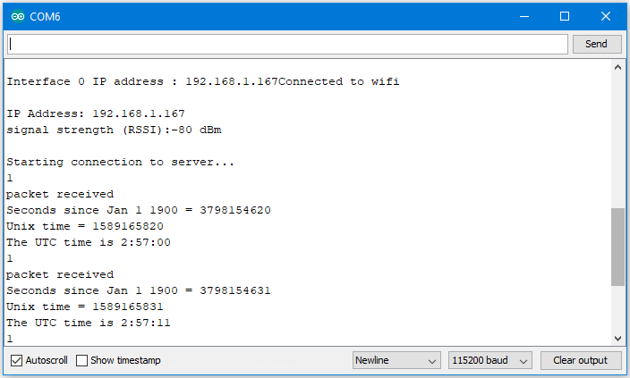

[RTL8722CSM] [RTL8722DM] SPI – Print Image And Text On LCD Screen¶
If you are not familiar with SPI, please read Introduction to SPI first.
Preparation
Ameba x 1
ILI9341 TFT LCD with SPI interface x 1
Example
We have tested the following two models of ILI9341 TFT LCD with SPI interface:
Adafruit 2.8″ TFT LCD (with touch screen)
QVGA 2.2″ TFT LCD
Common pins in ILI9341 TFT LCD with SPI interface:
MOSI: Standard SPI Pin
MISO: Standard SPI Pin
SLK: Standard SPI Pin
CS: Standard SPI Pin
RESET: Used to reboot LCD.
- D/C: Data/Command. When it is at Low, the signal transmitted are
commands, otherwise the data transmitted are data.
- LED (or BL): Adapt the screen backlight. Can be controlled by PWM or
connected to VCC for 100% backlight.
VCC: Connected to 3V or 5V, depends on its spec.
GND: Connected to GND.
Wiring example of QVGA TFT LCD:


Open the example, “Files” -> “Examples” -> “AmebaSPI” -> “ILI9341_TFT_LCD_basic”
{kind=link}

Code Reference
- RGB 16-bit | ILI9341 uses RGB 16-bit to display colors. Different from RGB 24-bit, it uses 5 bits for red, 6 bits for green, 5 bits for blue. For example, the RGB 24-bit representation of sky blue is 0x87CEFF, that is in binary:
Red: 0x87 = B10000111
Green: 0xCE = B11001110
Blue: 0xFF = B11111111
and converted to RGB 16-bit:
Red: B10000
Green: B110011
Blue: B11111
Then concatenate them, which forms B1000011001111111 = 0x867F
Drawing of ILI9341
- First you must specify the range of the rectangle to draw, then
pass the 2-byte RGB 16-bit color to ILI9341 corresponding to each pixel one by one, in this way ILI9341 fills each color to each pixel.
- You still must specify the drawing range even though the range
covers only one pixel.
- From the rules we mentioned above, we can conclude that drawing
vertical or horizontal lines are faster than diagonal lines.
Printing text on ILI9341
- In our API, each character is 5×7 but each character is printed to
size 6×8 (its right side and below are left blank), so as to separate from next character. For example, the character “A”:

- The font size represents the dot size. For example, if the font
size is 2, each dot in the character is a 2×2 rectangle
Screen rotation
ILI9341 provides 0, 90, 180, 270 degrees screen rotation.
- If the original width is 240 and original height is 320, when the
screen rotates 90 degrees, the width becomes 320 and the height becomes 240.